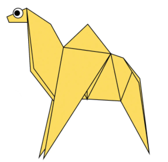
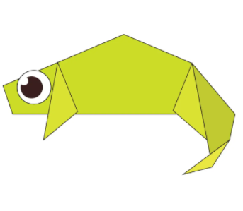
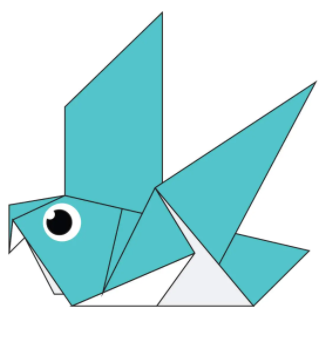

Origami Designs
Camel

Intresting fact's about camel
- Camel's ears are furry
- Camel's can easily move across the sand because their feets are specially desinged
Chameleon

Intresting fact's about chameleon
- Chameleons are reptiles that are a part of the iguana suborder
- Chameleons also changes colour to communicate
Panda
Intresting fact's about panda
- New born panda's are pink in colour
- Bamboo is critical to their diet
Pigeon

Intresting fact's about pigeon
- Pigeons can fly at an altitude of 6000ft(6000feet)
- Average speed of a pigeon can be 50-60 miles per hour
Bear

Intresting fact's about bear
- Black bears can run at the speed up to 35mph
- There are eight species of bears
Flying Cicada

Intresting fact's about flying cicada
- There are total 3000 species of flying cicada
- There are two main types of flying cicadas:Annual Cicadas(spotted every year);Periodical Cicadas(spend most of their lives underground and only emerge once every decade or two)